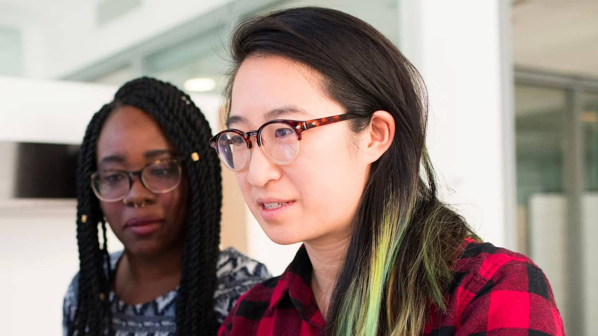
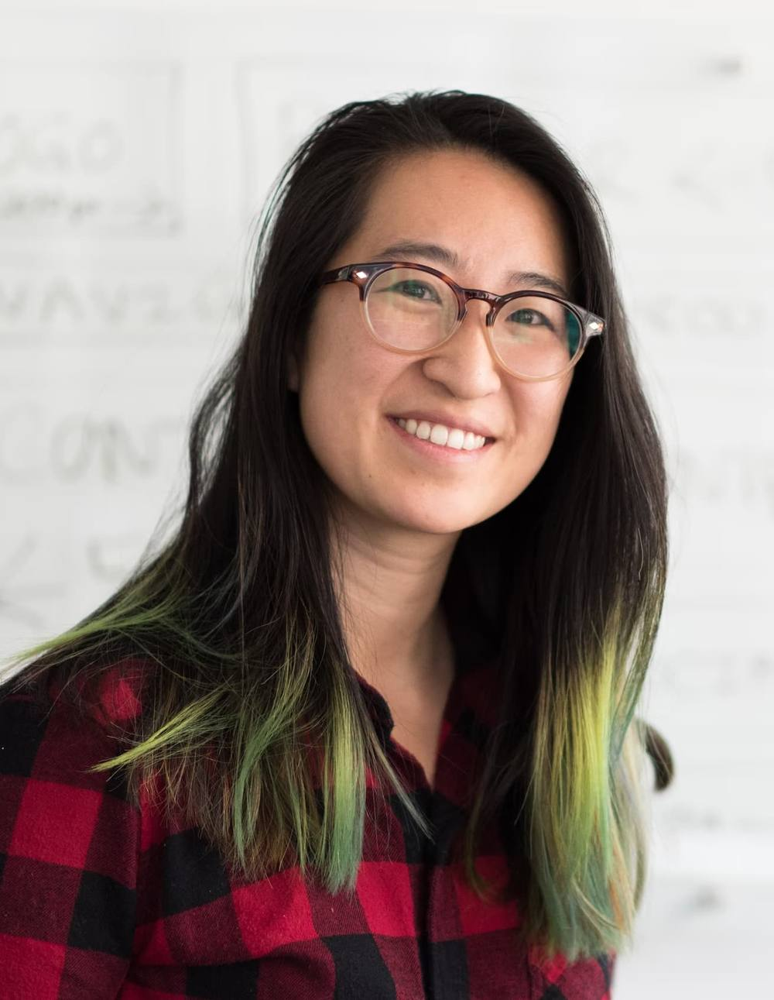

Choosing the right course
Find a direction that fits your interests, strengths and goals.
We help students and families understand their options, make informed decisions and build a clear plan for what comes next.

The closer university gets, the more questions seem to appear.
What should I study?
Which universities should I consider?
Are my grades good enough?
When should I start applying?
Could I get a scholarship?
What if I make the wrong choice?
Sound familiar? Let’s talk it through.
Book a consultationDifferent countries, different systems, different deadlines. We help you understand your options and plan the move.
University websites, rankings, application guides, deadlines, videos, opinions, advice… There’s more information available than ever.
That’s the clarity we help you build.
From understanding your options and choosing universities to managing deadlines, applications, scholarships and important decisions, we help make the process clearer, more organised and easier to navigate.
You make the decisions. We help you make sense of them.
It’s about helping them understand their options well enough to make their own decisions.

Placeholder photoPortrait of Cynthia — natural light, approachable, not corporate.
Find a direction that fits your interests, strengths and goals.
Understand which options make sense for your profile and plans.
Know what universities expect and what you need to prepare.
Know what deserves your attention now and what comes later.
Stay organised throughout the process.
Understand which opportunities may be available to you.
Compare your options and make your choice with greater clarity.
Entry requirements, applications, deadlines: we map out what it takes and walk the path with you.
Personal guidance for students and families who want Cynthia by their side throughout the process.
Explore Personal ConsultingResources, information and ongoing support to help you stay informed and on track.
Explore MembershipFor students who want to better understand their strengths, interests and possible directions before deciding what comes next.
Explore MorrisbyNot sure which one fits you? Let’s work it out together.
Book a consultationWhere the student and family were at the start.
What we worked on and decided together.
Where they are now, in their words.
Where the student and family were at the start.
What we worked on and decided together.
Where they are now, in their words.
Where the student and family were at the start.
What we worked on and decided together.
Where they are now, in their words.
Didn’t find your question here? Ask Cynthia directly.
To be written with Cynthia.
To be written with Cynthia.
To be written with Cynthia.
To be written with Cynthia, together with the pricing model.
To be written with Cynthia.
Let’s understand where you are, where you want to go and what makes sense from here.